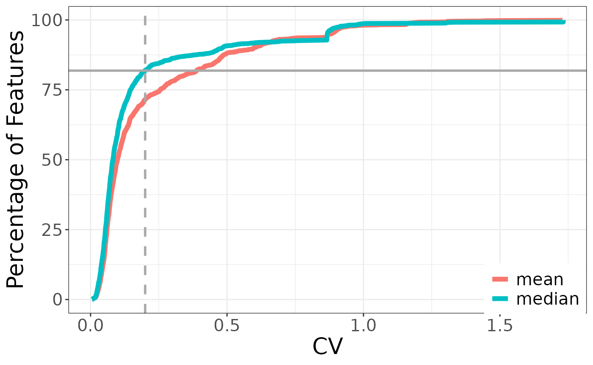
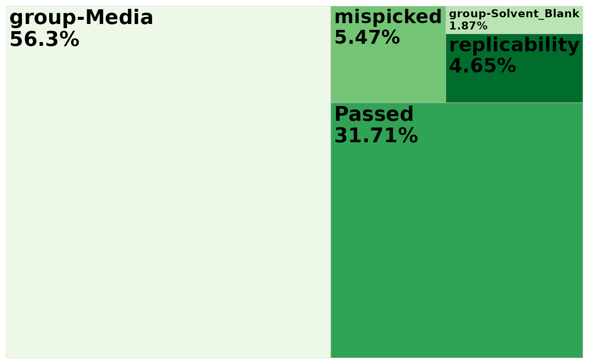
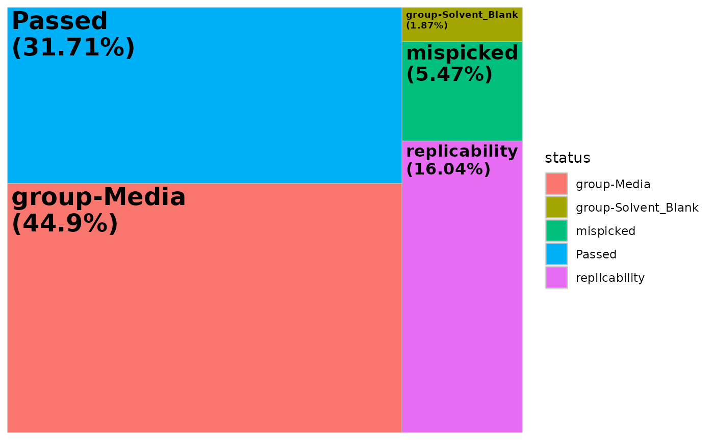
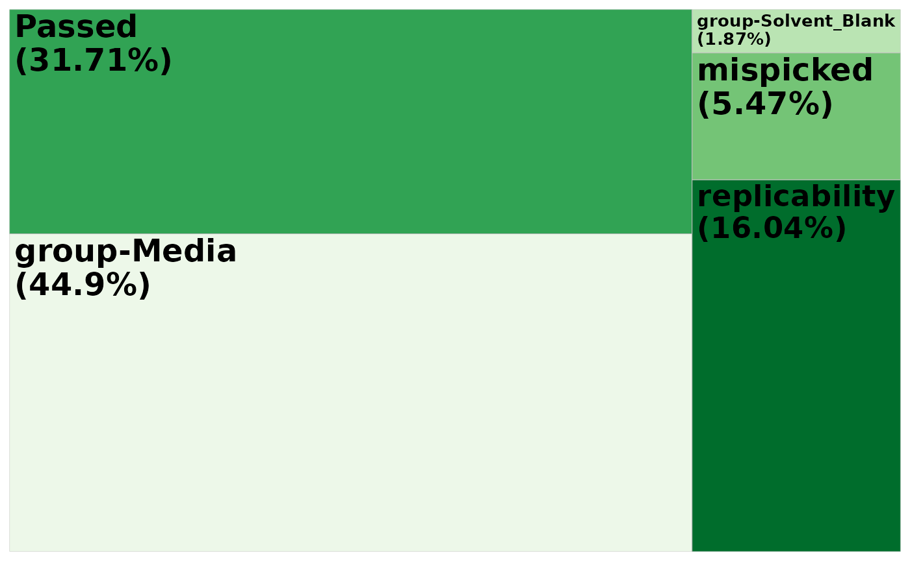
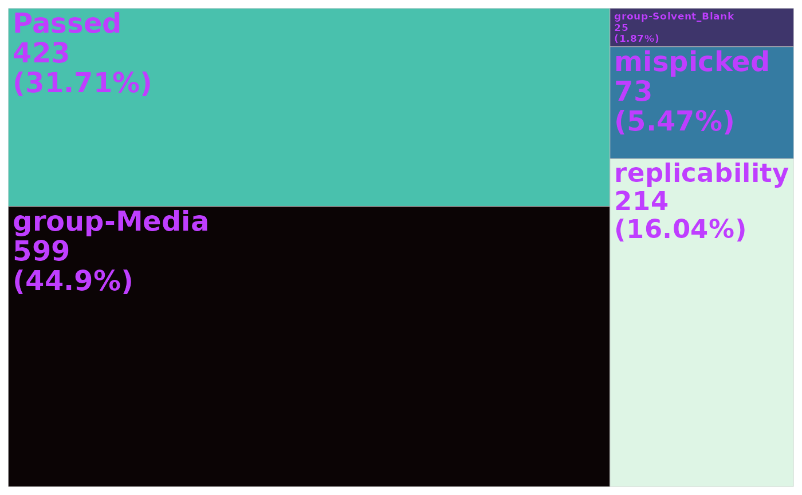

Load data into R
mpactr requires 2 files as input: a feature table and metadata file. Both are expected to be comma separated files (.csv).
- peak_table: a peak table in Progenesis format is expected. To export a compatable peak table in Progenesis, navigate to the Review Compounds tab then File -> Export Compound Measurements. Select the following properties: Compound, m/z, Retention time (min), and Raw abundance and click ok.
- metadata: a table with sample information. At minimum the following columns are expected: Injection, Sample_Code, and Biological_Group. Injection is the sample name and is expected to match sample column names in the peak_table. Sample_Code is the id for technical replicate groups. Biological_Group is the id for biological replicate groups. Other sample metadata can be added, and is encouraged for downstream analysis following filtering with mpactr.
To import your data into R, use the mpactr function
import_data(), which has the arguments:
peak_table_file_path and meta_data_file_path.
Note - you do not need to use example() if you are using
your own files. This is a package function that allows access to
internal package data. If you simply want to play around with the packge
using example data, you can run the import_data function as
shown above, otherwise, provide file paths for your own files. The
function is expecting files the the extension .csv. The
meta_data argument will also accept an R
data.frame or data.table object, assuming it
is in the correct format. This can be useful of you need to manually
format an existing metadata file, or want to extract metadata
information from your peak table column names.
data <- import_data(example("cultures_peak_table.csv"),
example("cultures_metadata.csv"),
format = "Progenesis"
)This will create an R6 class object, which will store both the peak table and metadata.
Calling the new mpactr object will print the current peak table in the terminal:
data
#> Compound mz rt 102623_UM1848B_JC1_69_1_5004
#> <char> <num> <num> <num>
#> 1: 1 256.0883 0.7748333 0.00
#> 2: 2 484.2921 0.7756667 546.56
#> 3: 3 445.2276 0.7786667 0.00
#> 4: 4 354.1842 0.7786667 0.00
#> 5: 5 353.1995 0.7816667 0.00
#> ---
#> 1330: 1330 538.3182 11.4396667 0.00
#> 1331: 1331 424.2710 11.4315000 0.00
#> 1332: 1332 422.1770 11.4568333 10655.27
#> 1333: 1333 422.1776 11.4528333 923.77
#> 1334: 1334 538.3981 11.4811667 1176.19
#> 102623_UM1846B_Media_67_1_5005 102623_UM1847B_JC28_68_1_5006
#> <num> <num>
#> 1: 0.00 5358.26
#> 2: 16389.28 0.00
#> 3: 22515.28 0.00
#> 4: 6086.35 0.00
#> 5: 5923.96 0.00
#> ---
#> 1330: 0.00 21222.45
#> 1331: 0.00 39842.07
#> 1332: 5737.01 33477.91
#> 1333: 0.00 6012.07
#> 1334: 1353.96 14792.94
#> 102623_UM1850B_ANGDT_71_1_5007 102623_UM1849B_ANG18_70_1_5008
#> <num> <num>
#> 1: 4131.40 3398.08
#> 2: 0.00 0.00
#> 3: 0.00 1641.70
#> 4: 0.00 0.00
#> 5: 0.00 0.00
#> ---
#> 1330: 5798.99 0.00
#> 1331: 0.00 40318.68
#> 1332: 28487.39 11222.92
#> 1333: 4634.47 1250.37
#> 1334: 3151.34 1590.32
#> 102623_UM1852B_Coculture_72_1_5009 102623_MixedMonoculture_84_1_5015
#> <num> <num>
#> 1: 5464.43 3299.94
#> 2: 0.00 0.00
#> 3: 0.00 0.00
#> 4: 0.00 0.00
#> 5: 0.00 0.00
#> ---
#> 1330: 30536.02 7732.14
#> 1331: 26284.99 0.00
#> 1332: 20043.54 20653.87
#> 1333: 1112.28 2910.70
#> 1334: 1190.15 5869.06
#> 102623_UM1848B_JC1_69_1_5017 102623_UM1846B_Media_67_1_5018
#> <num> <num>
#> 1: 0.00 2168.71
#> 2: 0.00 20194.55
#> 3: 0.00 19457.70
#> 4: 0.00 5966.08
#> 5: 0.00 5674.10
#> ---
#> 1330: 0.00 0.00
#> 1331: 0.00 0.00
#> 1332: 13961.88 9107.94
#> 1333: 1364.87 0.00
#> 1334: 1404.99 1636.15
#> 102623_UM1847B_JC28_68_1_5019 102623_UM1850B_ANGDT_71_1_5020
#> <num> <num>
#> 1: 5505.94 3762.47
#> 2: 0.00 0.00
#> 3: 0.00 0.00
#> 4: 0.00 0.00
#> 5: 0.00 0.00
#> ---
#> 1330: 17782.36 7420.76
#> 1331: 37742.99 0.00
#> 1332: 30362.90 28691.15
#> 1333: 5510.67 4081.40
#> 1334: 15933.62 2995.29
#> 102623_UM1849B_ANG18_70_1_5021 102623_UM1852B_Coculture_72_1_5022
#> <num> <num>
#> 1: 3424.76 4890.84
#> 2: 0.00 0.00
#> 3: 0.00 0.00
#> 4: 0.00 0.00
#> 5: 0.00 0.00
#> ---
#> 1330: 0.00 28742.16
#> 1331: 0.00 27778.21
#> 1332: 11211.29 18412.55
#> 1333: 1096.25 0.00
#> 1334: 1350.04 1429.84
#> 102623_MixedMonoculture_84_1_5028 102623_UM1848B_JC1_69_1_5030
#> <num> <num>
#> 1: 2870.98 0.00
#> 2: 0.00 0.00
#> 3: 651.95 0.00
#> 4: 0.00 0.00
#> 5: 0.00 0.00
#> ---
#> 1330: 7830.13 0.00
#> 1331: 39217.34 40432.41
#> 1332: 20650.23 15504.38
#> 1333: 1604.38 1643.83
#> 1334: 5398.81 982.25
#> 102623_UM1846B_Media_67_1_5031 102623_UM1847B_JC28_68_1_5032
#> <num> <num>
#> 1: 2033.65 5522.76
#> 2: 18650.07 0.00
#> 3: 19542.19 0.00
#> 4: 6755.31 0.00
#> 5: 5971.36 0.00
#> ---
#> 1330: 0.00 18990.44
#> 1331: 40989.54 36259.55
#> 1332: 8683.32 29340.12
#> 1333: 0.00 5323.67
#> 1334: 1791.72 16808.92
#> 102623_UM1850B_ANGDT_71_1_5033 102623_UM1849B_ANG18_70_1_5034
#> <num> <num>
#> 1: 3446.13 3621.36
#> 2: 0.00 0.00
#> 3: 0.00 0.00
#> 4: 0.00 0.00
#> 5: 0.00 0.00
#> ---
#> 1330: 8203.37 0.00
#> 1331: 0.00 38269.77
#> 1332: 27768.08 11750.24
#> 1333: 4578.46 1073.26
#> 1334: 3039.45 1120.35
#> 102623_UM1852B_Coculture_72_1_5035 102623_MixedMonoculture_84_1_5041
#> <num> <num>
#> 1: 5051.84 3028.24
#> 2: 0.00 399.02
#> 3: 0.00 664.81
#> 4: 0.00 0.00
#> 5: 0.00 0.00
#> ---
#> 1330: 29868.13 8723.55
#> 1331: 22049.76 38174.90
#> 1332: 18710.25 21920.51
#> 1333: 0.00 1213.00
#> 1334: 1306.39 5012.83
#> 102423_Blank_77_1_5095 102423_Blank_77_2_5096 102423_Blank_77_3_5097
#> <num> <num> <num>
#> 1: 0.00 0 0.00
#> 2: 0.00 0 0.00
#> 3: 0.00 0 0.00
#> 4: 0.00 0 0.00
#> 5: 0.00 0 0.00
#> ---
#> 1330: 0.00 0 0.00
#> 1331: 20155.81 0 35516.44
#> 1332: 0.00 0 0.00
#> 1333: 0.00 0 0.00
#> 1334: 0.00 0 0.00
#> kmd
#> <num>
#> 1: 0.08831
#> 2: 0.29214
#> 3: 0.22763
#> 4: 0.18421
#> 5: 0.19945
#> ---
#> 1330: 0.31820
#> 1331: 0.27097
#> 1332: 0.17696
#> 1333: 0.17758
#> 1334: 0.39806Accessing data in mpactr object
You can extract the peak table or metadata at any point with
get_raw_data(), get_peak_table() and
get_meta_data() functions. Both functions will return a
data.table object with the corresponding information.
Extract peak table
The raw peak table is the unfiltered peak table used as input to
mpactr. To extract the raw input peak table, use the function
get_raw_data().
get_raw_data(data)[1:5, 1:8]
#> Compound mz rt 102623_UM1848B_JC1_69_1_5004
#> <num> <num> <num> <num>
#> 1: 1 256.0883 0.7748333 0.00
#> 2: 2 484.2921 0.7756667 546.56
#> 3: 3 445.2276 0.7786667 0.00
#> 4: 4 354.1842 0.7786667 0.00
#> 5: 5 353.1995 0.7816667 0.00
#> 102623_UM1846B_Media_67_1_5005 102623_UM1847B_JC28_68_1_5006
#> <num> <num>
#> 1: 0.00 5358.26
#> 2: 16389.28 0.00
#> 3: 22515.28 0.00
#> 4: 6086.35 0.00
#> 5: 5923.96 0.00
#> 102623_UM1850B_ANGDT_71_1_5007 102623_UM1849B_ANG18_70_1_5008
#> <num> <num>
#> 1: 4131.4 3398.08
#> 2: 0.0 0.00
#> 3: 0.0 1641.70
#> 4: 0.0 0.00
#> 5: 0.0 0.00The raw peak table will not change as filters are applied to the
data. If you want to extract the filtered peak table, with filters that
have been applied, use get_peak_table():
get_peak_table(data)[1:5, 1:8]
#> Compound mz rt 102623_UM1848B_JC1_69_1_5004
#> <char> <num> <num> <num>
#> 1: 1 256.0883 0.7748333 0.00
#> 2: 2 484.2921 0.7756667 546.56
#> 3: 3 445.2276 0.7786667 0.00
#> 4: 4 354.1842 0.7786667 0.00
#> 5: 5 353.1995 0.7816667 0.00
#> 102623_UM1846B_Media_67_1_5005 102623_UM1847B_JC28_68_1_5006
#> <num> <num>
#> 1: 0.00 5358.26
#> 2: 16389.28 0.00
#> 3: 22515.28 0.00
#> 4: 6086.35 0.00
#> 5: 5923.96 0.00
#> 102623_UM1850B_ANGDT_71_1_5007 102623_UM1849B_ANG18_70_1_5008
#> <num> <num>
#> 1: 4131.4 3398.08
#> 2: 0.0 0.00
#> 3: 0.0 1641.70
#> 4: 0.0 0.00
#> 5: 0.0 0.00Extract metadata
get_meta_data(data)[1:5, ]
#> Injection Sample_Code Biological_Group dilution
#> <char> <char> <char> <num>
#> 1: 102623_UM1848B_JC1_69_1_5004 UM1848B JC1 1
#> 2: 102623_UM1846B_Media_67_1_5005 UM1846B Media 1
#> 3: 102623_UM1847B_JC28_68_1_5006 UM1847B JC28 1
#> 4: 102623_UM1850B_ANGDT_71_1_5007 UM1850B ANGDT 1
#> 5: 102623_UM1849B_ANG18_70_1_5008 UM1849B ANG18 1Reference semantics
mpactr is built on an R6 class-system, meaning it operates on reference semantics in which data is updated in-place. Compared to a shallow copy, where only data pointers are copied, or a deep copy, where the entire data object is copied in memory, any changes to the original data object, regardless if they are assigned to a new object, result in changes to the original data object. We can see this below.
Where the raw data object has 1334 ions in the feature table:
data2 <- import_data(example("cultures_peak_table.csv"),
example("cultures_metadata.csv"),
format = "Progenesis"
)
get_peak_table(data2)[, 1:5]
#> Compound mz rt 102623_UM1848B_JC1_69_1_5004
#> <char> <num> <num> <num>
#> 1: 1 256.0883 0.7748333 0.00
#> 2: 2 484.2921 0.7756667 546.56
#> 3: 3 445.2276 0.7786667 0.00
#> 4: 4 354.1842 0.7786667 0.00
#> 5: 5 353.1995 0.7816667 0.00
#> ---
#> 1330: 1330 538.3182 11.4396667 0.00
#> 1331: 1331 424.2710 11.4315000 0.00
#> 1332: 1332 422.1770 11.4568333 10655.27
#> 1333: 1333 422.1776 11.4528333 923.77
#> 1334: 1334 538.3981 11.4811667 1176.19
#> 102623_UM1846B_Media_67_1_5005
#> <num>
#> 1: 0.00
#> 2: 16389.28
#> 3: 22515.28
#> 4: 6086.35
#> 5: 5923.96
#> ---
#> 1330: 0.00
#> 1331: 0.00
#> 1332: 5737.01
#> 1333: 0.00
#> 1334: 1353.96We can run the filter_mispicked_ions filter, with
default setting copy_object = FALSE (operates on reference
semantics).
data2_mispicked <- filter_mispicked_ions(data2,
ringwin = 0.5,
isowin = 0.01, trwin = 0.005,
max_iso_shift = 3, merge_peaks = TRUE,
merge_method = "sum",
copy_object = FALSE
)
#> ℹ Checking 1334 peaks for mispicked peaks.
#> ℹ Argument merge_peaks is: TRUE. Merging mispicked peaks with method sum.
#> ✔ 73 ions failed the mispicked filter, 1261 ions remain.
get_peak_table(data2_mispicked)[, 1:5]
#> Key: <Compound, mz, kmd, rt>
#> Compound mz kmd rt 102423_Blank_77_1_5095
#> <char> <num> <num> <num> <num>
#> 1: 1 256.0883 0.08831 0.7748333 0
#> 2: 10 340.2040 0.20399 0.7916667 0
#> 3: 100 557.1519 0.15191 3.6925000 0
#> 4: 1000 278.0638 0.06382 5.5228333 0
#> 5: 1001 296.0736 0.07365 5.5246667 0
#> ---
#> 1257: 995 561.2726 0.27255 5.4810000 0
#> 1258: 996 228.1430 0.14305 5.4818333 0
#> 1259: 997 425.1873 0.18726 5.4640000 0
#> 1260: 998 337.1987 0.19873 5.4818333 0
#> 1261: 999 640.3299 0.32993 5.4596667 0This results in 1261 ions in the feature table (above). Even though
we created an object called data2_mispicked, the original
data2 object was also updated and now has 1261 ions in the
feature table:
get_peak_table(data2)[, 1:5]
#> Key: <Compound, mz, kmd, rt>
#> Compound mz kmd rt 102423_Blank_77_1_5095
#> <char> <num> <num> <num> <num>
#> 1: 1 256.0883 0.08831 0.7748333 0
#> 2: 10 340.2040 0.20399 0.7916667 0
#> 3: 100 557.1519 0.15191 3.6925000 0
#> 4: 1000 278.0638 0.06382 5.5228333 0
#> 5: 1001 296.0736 0.07365 5.5246667 0
#> ---
#> 1257: 995 561.2726 0.27255 5.4810000 0
#> 1258: 996 228.1430 0.14305 5.4818333 0
#> 1259: 997 425.1873 0.18726 5.4640000 0
#> 1260: 998 337.1987 0.19873 5.4818333 0
#> 1261: 999 640.3299 0.32993 5.4596667 0We recommend using the default copy_object = FALSE as
this makes for an extremely fast and memory-efficient way to chain
mpactr filters together (see Chaining filters together
section and Reference
Semantics); however, if you would like to run the filters
individually with traditional R style objects, you can set
copy_object to TRUE as shown in the filter
examples.
Filtering
mpactr provides filters to correct for the following issues observed during preprocessing of tandem MS/MS data:
- mispicked ions: isotopic patterns that are incorrectly split during preprocessing.
- solvent blank contamination: removal of features present in solvent blanks due to carryover between samples.
- background components: features whose abundance is greater than user-defined abundance threshold in a specific group of samples, for example media blanks.
- non-reproducible ions: those that are inconsistent between technical replicates.
- insource ions: fragment ions created during ionization before fragmentation in the tandem MS/MS workflow.
Mispicked ions filter
To check for mispicked ions, use mpactr function
filter_mispicked_ions(). This function takes an
mpactr object as input, and checks for similar ions with
the arguments ringwin, isowin,
trwin and max_iso_shift.
Ions in the feature table are flagged as similar based on retention time and mass. Flagged ion groups are suggested to be the result of incorrect splitting of isotopic patterns during peak picking, detector saturation artifacts, or incorrect identification of multiply charged oligomers.
data_mispicked <- filter_mispicked_ions(data,
ringwin = 0.5,
isowin = 0.01, trwin = 0.005,
max_iso_shift = 3, merge_peaks = TRUE,
merge_method = "sum",
copy_object = TRUE
)
#> ℹ Checking 1334 peaks for mispicked peaks.
#> ℹ Argument merge_peaks is: TRUE. Merging mispicked peaks with method sum.
#> ✔ 73 ions failed the mispicked filter, 1261 ions remain.Each filter reports progress of filtering, here we can see that 1334 ions were present prior to checking for mispicked ions. 73 ions were found to be similar to another ion and following merging, 1261 ions remain.
If you are interested in the groups of similar ions flagged in this
filter, you can use get_similar_ions(). This function
returns a data.table reporting the main ion (the ion
retained post-merging) and the ions similar to it.
head(get_similar_ions(data_mispicked))
#> main_ion similar_ions
#> <char> <list>
#> 1: 1188 1189
#> 2: 939 945
#> 3: 898 896
#> 4: 1214 1210
#> 5: 1253 1249
#> 6: 886 884Remove ions that are above a threshold in one biological group
Removing solvent blank impurities is important for correcting for
between-sample carryover and contamination in experimental samples. You
can identify and remove these ions with mpactr’s
filter_group() function. filter_group()
identifies ions above a relative abundance threshold
(group_threshold) in a specific group
(group_to_remove). To remove solvent blank impurities, set
group_to_remove to the Biological_Group in
your metadata file which corresponds to your solvent blank samples, here
“Solvent_Blank”.
data_blank <- filter_group(data,
group_threshold = 0.01,
group_to_remove = "Solvent_Blank", remove_ions = TRUE,
copy_object = TRUE
)
#> ℹ Parsing 1334 peaks based on the sample group: Solvent_Blank.
#> ℹ Argument remove_ions is: TRUE.Removing peaks from Solvent_Blank.
#> ✔ 26 ions failed the Solvent_Blank filter, 1308 ions remain.In this example, 1334 ions were present prior to the group filter. 26 ions were found to be above the relative abundance threshold of 0.01 in “Solvent_Blank” samples, leaving 1308 ions in the peak table.
We can also use this filter to remove ions from other groups, such as
media blanks. This can be useful for experiments on cell cultures. The
example data contains samples belonging to the
Biological_Group “Media”. These samples are from media
blanks, which are negative controls from the growth experiments
conducted in this study. We can remove features whose abundance is
greater than 1% of the largest group in media blank samples by
specifying group_to_remove = “Media”. We recommend removing
media blank ions following all other filters so all high-quality ions
are identified (see Chaining filters together below).
data_media_blank <- filter_group(data,
group_threshold = 0.01,
group_to_remove = "Media", remove_ions = TRUE,
copy_object = TRUE
)
#> ℹ Parsing 1334 peaks based on the sample group: Media.
#> ℹ Argument remove_ions is: TRUE.Removing peaks from Media.
#> ✔ 824 ions failed the Media filter, 510 ions remain.Remove non-reproducible ions
Ions whose abundance are not consisent between technical replicates
(i.e., non-reproducible) may not be reliable for analysis and
therefore should be removed from the feature table. Non-reproducible
ions are identified by mean or median coefficient of variation (CV)
between technical replicates with filter_cv(). Note - this
filter cannot be applied to data that does not contain technical
replicates.
data_rep <- filter_cv(data,
cv_threshold = 0.2, cv_param = "median",
copy_object = TRUE
)
#> ℹ Parsing 1334 peaks for replicability across technical replicates.
#> ✔ 241 ions failed the cv_filter filter, 1093 ions remain.In our example dataset, 241 ions were flagged as non-reproducible. These ions were removed, leaving 1093 ions in the feature table.
If you would like to visualize how the CV threshold performed on your
dataset, you can extract the CV calculated during
filer_cv() using mpactr’s get_cv_data()
function, and calculate the percentage of features for plotting. You can
look at both mean and median CV as shown in the example below, or you
can filter the data by the parameter of choice.
cv <- get_cv_data(data_rep) %>%
pivot_longer(cols = c("mean_cv", "median_cv"),
names_to = "param",
values_to = "cv") %>%
nest(.by = param) %>%
mutate(
data = map(data, arrange, cv),
data = map(data, mutate, index = 0:(length(cv) - 1)),
data = map(data, mutate, index_scale = index * 100 / length(cv))
)
head(cv)
#> # A tibble: 2 × 2
#> param data
#> <chr> <list>
#> 1 mean_cv <tibble [1,334 × 4]>
#> 2 median_cv <tibble [1,334 × 4]>The nested data are tibbles with the columns Compound, cv, index, index_scale:
#> # A tibble: 6 × 4
#> Compound cv index index_scale
#> <chr> <dbl> <int> <dbl>
#> 1 455 0.00500 0 0
#> 2 364 0.00720 1 0.0750
#> 3 409 0.00787 2 0.150
#> 4 435 0.00803 3 0.225
#> 5 1003 0.00887 4 0.300
#> 6 1117 0.0115 5 0.375There is one tibble for each parameter (either mean or median). We also want to calculate the percentage of features represented by the CV threshold.
cv_thresh_percent <- cv %>%
filter(param == "median_cv") %>%
unnest(cols = data) %>%
mutate(diff_cv_thresh = abs(cv - 0.2)) %>%
slice_min(diff_cv_thresh, n = 1) %>%
pull(index_scale)
cv_thresh_percent
#> [1] 81.85907Then we can plot percentage of features by CV:
cv %>%
unnest(cols = data) %>%
mutate(param = factor(param, levels = c("mean_cv", "median_cv"),
labels = c("mean", "median"))) %>%
ggplot() +
aes(x = cv, y = index_scale, group = param, color = param) +
geom_line(linewidth = 2) +
geom_vline(xintercept = 0.2,
color = "darkgrey",
linetype = "dashed",
linewidth = 1) +
geom_hline(yintercept = cv_thresh_percent,
color = "darkgrey",
linewidth = 1) +
labs(x = "CV",
y = "Percentage of Features",
param = "Statistic") +
theme_bw() +
theme(
axis.title = element_text(size = 20),
axis.text = element_text(size = 15),
legend.position = "inside",
legend.position.inside = c(.90, .08),
legend.title = element_blank(),
legend.text = element_text(size = 15)
)
Here we can see that roughly 80% of features were below the CV threshold meaning 20% were removed at a CV threshold of 0.2.
Remove insource fragment ions
Some mass species can be fragmented during ionization in tandem
MS/MS, creating insource ions. This can result in ions from one compound
being represented more than once in the feature table. If you would like
to remove insource ions fragments, you can do so with mpactr’s
filter_insource_ions(). filter_insource_ions()
conducts ion deconvolution via retention time correlation matrices
within MS1 scans. Highly correlated ion groups are determined by the
cluster_threshold parameter and filtered to remove the low
mass features. The highest mass feature is identified as the likely
precursor ion and retained in the feature table.
data_insource <- filter_insource_ions(data,
cluster_threshold = 0.95,
copy_object = TRUE
)
#> ℹ Parsing 1334 peaks for insource ions.
#> ✔ 72 ions failed the insource filter, 1262 ions remain.72 ions were identified and removed during deconvolution of this dataset, leaving 1262 ions in the feature table.
Chaining filters together
Filters can be chained in a customizable workflow, shown below. While
filters can be chained in any order, we recommend filtering mispicked
ions, then solvent blanks, prior to filtering non-repoducible or
insource ions. This will allow for incorrectly picked peaks to be merged
and any contamination/carryover removed prior to identifying
non-reproducible and insource fragment ions. Here we also demonstrate
the removal of media blank components with the
filter_group() function after identification of
high-quality ions.
data <- import_data(example("cultures_peak_table.csv"),
example("cultures_metadata.csv"),
format = "Progenesis"
)
data_filtered <- filter_mispicked_ions(data, merge_method = "sum") |>
filter_group(group_to_remove = "Solvent_Blank") |>
filter_cv(cv_threshold = 0.2, cv_param = "median") |>
filter_group(group_to_remove = "Media")
#> ℹ Checking 1334 peaks for mispicked peaks.
#> ℹ Argument merge_peaks is: TRUE. Merging mispicked peaks with method sum.
#> ✔ 73 ions failed the mispicked filter, 1261 ions remain.
#> ℹ Parsing 1261 peaks based on the sample group: Solvent_Blank.
#> ℹ Argument remove_ions is: TRUE.Removing peaks from Solvent_Blank.
#> ✔ 25 ions failed the Solvent_Blank filter, 1236 ions remain.
#> ℹ Parsing 1236 peaks for replicability across technical replicates.
#> ✔ 214 ions failed the cv_filter filter, 1022 ions remain.
#> ℹ Parsing 1022 peaks based on the sample group: Media.
#> ℹ Argument remove_ions is: TRUE.Removing peaks from Media.
#> ✔ 599 ions failed the Media filter, 423 ions remain.Summary
mpactr offers mutliple ways to view a summary of data filtering.
View passing and failed ions for a single filter
If you are interested in viewing the passing and failing ions for a
single filter, use the filter_summary() function. You must
specify which filter you are intested in, either “mispicked”, “group”,
“replicability”, or “insource”.
mispicked_summary <- filter_summary(data_filtered, filter = "mispicked")Failed ions:
mispicked_summary$failed_ions
#> [1] "1189" "945" "896" "1210" "1249" "884" "1060" "1008" "1304" "1271"
#> [11] "1326" "1333" "937" "1250" "1196" "1014" "895" "1228" "817" "853"
#> [21] "1122" "938" "743" "1145" "1021" "946" "161" "1032" "1033" "282"
#> [31] "154" "779" "1254" "1224" "260" "264" "18" "1012" "800" "1251"
#> [41] "901" "969" "1259" "1223" "528" "1095" "927" "1242" "410" "1260"
#> [51] "427" "1157" "1206" "393" "1252" "1204" "975" "584" "1282" "1090"
#> [61] "1257" "507" "1087" "1153" "1261" "371" "373" "340" "1267" "546"
#> [71] "495" "1289" "1290"Passing ions:
head(mispicked_summary$passed_ions, 100)
#> [1] "1" "10" "100" "1000" "1001" "1002" "1003" "1004" "1005" "1006"
#> [11] "1007" "1009" "101" "1010" "1011" "1013" "1015" "1016" "1017" "1018"
#> [21] "1019" "102" "1020" "1022" "1023" "1024" "1025" "1026" "1027" "1028"
#> [31] "1029" "103" "1030" "1031" "1034" "1035" "1036" "1037" "1038" "1039"
#> [41] "104" "1040" "1041" "1042" "1043" "1044" "1045" "1046" "1047" "1048"
#> [51] "1049" "105" "1050" "1051" "1052" "1053" "1054" "1055" "1056" "1057"
#> [61] "1058" "1059" "106" "1061" "1062" "1063" "1064" "1065" "1066" "1067"
#> [71] "1068" "1069" "107" "1070" "1071" "1072" "1073" "1074" "1075" "1076"
#> [81] "1077" "1078" "1079" "108" "1080" "1081" "1082" "1083" "1084" "1085"
#> [91] "1086" "1088" "1089" "109" "1091" "1092" "1093" "1094" "1096" "1097"If you set filter to a filter name that you did not
apply to your data, an error message will be returned.
filter_summary(data_filtered, filter = "insource")
#> Error in `mpactr_object$get_log()`:
#> ! `filter` insource has not yet been applied to the data. Run the
#> corresponding filter function prior to extracting the summary.If you want to retrieve the filter summary for the group filter, you
must also supply the group name with the group
argument:
filter_summary(data_filtered, filter = "group", group = "Solvent_Blank")
#> $failed_ions
#> [1] "1275" "1324" "1325" "1330" "1331" "684" "697" "698" "709" "713"
#> [11] "714" "717" "720" "725" "730" "731" "735" "736" "737" "740"
#> [21] "747" "750" "752" "754" "755"
#>
#> $passed_ions
#> [1] "1" "10" "100" "1000" "1001" "1002" "1003" "1004" "1005" "1006"
#> [11] "1007" "1009" "101" "1010" "1011" "1013" "1015" "1016" "1017" "1018"
#> [21] "1019" "102" "1020" "1022" "1023" "1024" "1025" "1026" "1027" "1028"
#> [31] "1029" "103" "1030" "1031" "1034" "1035" "1036" "1037" "1038" "1039"
#> [41] "104" "1040" "1041" "1042" "1043" "1044" "1045" "1046" "1047" "1048"
#> [51] "1049" "105" "1050" "1051" "1052" "1053" "1054" "1055" "1056" "1057"
#> [61] "1058" "1059" "106" "1061" "1062" "1063" "1064" "1065" "1066" "1067"
#> [71] "1068" "1069" "107" "1070" "1071" "1072" "1073" "1074" "1075" "1076"
#> [81] "1077" "1078" "1079" "108" "1080" "1081" "1082" "1083" "1084" "1085"
#> [91] "1086" "1088" "1089" "109" "1091" "1092" "1093" "1094" "1096" "1097"
#> [101] "1098" "1099" "11" "110" "1100" "1101" "1102" "1103" "1104" "1105"
#> [111] "1106" "1107" "1108" "1109" "111" "1110" "1111" "1112" "1113" "1114"
#> [121] "1115" "1116" "1117" "1118" "1119" "112" "1120" "1121" "1123" "1124"
#> [131] "1125" "1126" "1127" "1128" "1129" "113" "1130" "1131" "1132" "1133"
#> [141] "1134" "1135" "1136" "1137" "1138" "1139" "114" "1140" "1141" "1142"
#> [151] "1143" "1144" "1146" "1147" "1148" "1149" "115" "1150" "1151" "1152"
#> [161] "1154" "1155" "1156" "1158" "1159" "116" "1160" "1161" "1162" "1163"
#> [171] "1164" "1165" "1166" "1167" "1168" "1169" "117" "1170" "1171" "1172"
#> [181] "1173" "1174" "1175" "1176" "1177" "1178" "1179" "118" "1180" "1181"
#> [191] "1182" "1183" "1184" "1185" "1186" "1187" "1188" "119" "1190" "1191"
#> [201] "1192" "1193" "1194" "1195" "1197" "1198" "1199" "12" "120" "1200"
#> [211] "1201" "1202" "1203" "1205" "1207" "1208" "1209" "121" "1211" "1212"
#> [221] "1213" "1214" "1215" "1216" "1217" "1218" "1219" "122" "1220" "1221"
#> [231] "1222" "1225" "1226" "1227" "1229" "123" "1230" "1231" "1232" "1233"
#> [241] "1234" "1235" "1236" "1237" "1238" "1239" "124" "1240" "1241" "1243"
#> [251] "1244" "1245" "1246" "1247" "1248" "125" "1253" "1255" "1256" "1258"
#> [261] "126" "1262" "1263" "1264" "1265" "1266" "1268" "1269" "127" "1270"
#> [271] "1272" "1273" "1274" "1276" "1277" "1278" "1279" "128" "1280" "1281"
#> [281] "1283" "1284" "1285" "1286" "1287" "1288" "129" "1291" "1292" "1293"
#> [291] "1294" "1295" "1296" "1297" "1298" "1299" "13" "130" "1300" "1301"
#> [301] "1302" "1303" "1305" "1306" "1307" "1308" "1309" "131" "1310" "1311"
#> [311] "1312" "1313" "1314" "1315" "1316" "1317" "1318" "1319" "132" "1320"
#> [321] "1321" "1322" "1323" "1327" "1328" "1329" "133" "1332" "1334" "134"
#> [331] "135" "136" "137" "138" "139" "14" "140" "141" "142" "143"
#> [341] "144" "145" "146" "147" "148" "149" "15" "150" "151" "152"
#> [351] "153" "155" "156" "157" "158" "159" "16" "160" "162" "163"
#> [361] "164" "165" "166" "167" "168" "169" "17" "170" "171" "172"
#> [371] "173" "174" "175" "176" "177" "178" "179" "180" "181" "182"
#> [381] "183" "184" "185" "186" "187" "188" "189" "19" "190" "191"
#> [391] "192" "193" "194" "195" "196" "197" "198" "199" "2" "20"
#> [401] "200" "201" "202" "203" "204" "205" "206" "207" "208" "209"
#> [411] "21" "210" "211" "212" "213" "214" "215" "216" "217" "218"
#> [421] "219" "22" "220" "221" "222" "223" "224" "225" "226" "227"
#> [431] "228" "229" "23" "230" "231" "232" "233" "234" "235" "236"
#> [441] "237" "238" "239" "24" "240" "241" "242" "243" "244" "245"
#> [451] "246" "247" "248" "249" "25" "250" "251" "252" "253" "254"
#> [461] "255" "256" "257" "258" "259" "26" "261" "262" "263" "265"
#> [471] "266" "267" "268" "269" "27" "270" "271" "272" "273" "274"
#> [481] "275" "276" "277" "278" "279" "28" "280" "281" "283" "284"
#> [491] "285" "286" "287" "288" "289" "29" "290" "291" "292" "293"
#> [501] "294" "295" "296" "297" "298" "299" "3" "30" "300" "301"
#> [511] "302" "303" "304" "305" "306" "307" "308" "309" "31" "310"
#> [521] "311" "312" "313" "314" "315" "316" "317" "318" "319" "32"
#> [531] "320" "321" "322" "323" "324" "325" "326" "327" "328" "329"
#> [541] "33" "330" "331" "332" "333" "334" "335" "336" "337" "338"
#> [551] "339" "34" "341" "342" "343" "344" "345" "346" "347" "348"
#> [561] "349" "35" "350" "351" "352" "353" "354" "355" "356" "357"
#> [571] "358" "359" "36" "360" "361" "362" "363" "364" "365" "366"
#> [581] "367" "368" "369" "37" "370" "372" "374" "375" "376" "377"
#> [591] "378" "379" "38" "380" "381" "382" "383" "384" "385" "386"
#> [601] "387" "388" "389" "39" "390" "391" "392" "394" "395" "396"
#> [611] "397" "398" "399" "4" "40" "400" "401" "402" "403" "404"
#> [621] "405" "406" "407" "408" "409" "41" "411" "412" "413" "414"
#> [631] "415" "416" "417" "418" "419" "42" "420" "421" "422" "423"
#> [641] "424" "425" "426" "428" "429" "43" "430" "431" "432" "433"
#> [651] "434" "435" "436" "437" "438" "439" "44" "440" "441" "442"
#> [661] "443" "444" "445" "446" "447" "448" "449" "45" "450" "451"
#> [671] "452" "453" "454" "455" "456" "457" "458" "459" "46" "460"
#> [681] "461" "462" "463" "464" "465" "466" "467" "468" "469" "47"
#> [691] "470" "471" "472" "473" "474" "475" "476" "477" "478" "479"
#> [701] "48" "480" "481" "482" "483" "484" "485" "486" "487" "488"
#> [711] "489" "49" "490" "491" "492" "493" "494" "496" "497" "498"
#> [721] "499" "5" "50" "500" "501" "502" "503" "504" "505" "506"
#> [731] "508" "509" "51" "510" "511" "512" "513" "514" "515" "516"
#> [741] "517" "518" "519" "52" "520" "521" "522" "523" "524" "525"
#> [751] "526" "527" "529" "53" "530" "531" "532" "533" "534" "535"
#> [761] "536" "537" "538" "539" "54" "540" "541" "542" "543" "544"
#> [771] "545" "547" "548" "549" "55" "550" "551" "552" "553" "554"
#> [781] "555" "556" "557" "558" "559" "56" "560" "561" "562" "563"
#> [791] "564" "565" "566" "567" "568" "569" "57" "570" "571" "572"
#> [801] "573" "574" "575" "576" "577" "578" "579" "58" "580" "581"
#> [811] "582" "583" "585" "586" "587" "588" "589" "59" "590" "591"
#> [821] "592" "593" "594" "595" "596" "597" "598" "599" "6" "60"
#> [831] "600" "601" "602" "603" "604" "605" "606" "607" "608" "609"
#> [841] "61" "610" "611" "612" "613" "614" "615" "616" "617" "618"
#> [851] "619" "62" "620" "621" "622" "623" "624" "625" "626" "627"
#> [861] "628" "629" "63" "630" "631" "632" "633" "634" "635" "636"
#> [871] "637" "638" "639" "64" "640" "641" "642" "643" "644" "645"
#> [881] "646" "647" "648" "649" "65" "650" "651" "652" "653" "654"
#> [891] "655" "656" "657" "658" "659" "66" "660" "661" "662" "663"
#> [901] "664" "665" "666" "667" "668" "669" "67" "670" "671" "672"
#> [911] "673" "674" "675" "676" "677" "678" "679" "68" "680" "681"
#> [921] "682" "683" "685" "686" "687" "688" "689" "69" "690" "691"
#> [931] "692" "693" "694" "695" "696" "699" "7" "70" "700" "701"
#> [941] "702" "703" "704" "705" "706" "707" "708" "71" "710" "711"
#> [951] "712" "715" "716" "718" "719" "72" "721" "722" "723" "724"
#> [961] "726" "727" "728" "729" "73" "732" "733" "734" "738" "739"
#> [971] "74" "741" "742" "744" "745" "746" "748" "749" "75" "751"
#> [981] "753" "756" "757" "758" "759" "76" "760" "761" "762" "763"
#> [991] "764" "765" "766" "767" "768" "769" "77" "770" "771" "772"
#> [1001] "773" "774" "775" "776" "777" "778" "78" "780" "781" "782"
#> [1011] "783" "784" "785" "786" "787" "788" "789" "79" "790" "791"
#> [1021] "792" "793" "794" "795" "796" "797" "798" "799" "8" "80"
#> [1031] "801" "802" "803" "804" "805" "806" "807" "808" "809" "81"
#> [1041] "810" "811" "812" "813" "814" "815" "816" "818" "819" "82"
#> [1051] "820" "821" "822" "823" "824" "825" "826" "827" "828" "829"
#> [1061] "83" "830" "831" "832" "833" "834" "835" "836" "837" "838"
#> [1071] "839" "84" "840" "841" "842" "843" "844" "845" "846" "847"
#> [1081] "848" "849" "85" "850" "851" "852" "854" "855" "856" "857"
#> [1091] "858" "859" "86" "860" "861" "862" "863" "864" "865" "866"
#> [1101] "867" "868" "869" "87" "870" "871" "872" "873" "874" "875"
#> [1111] "876" "877" "878" "879" "88" "880" "881" "882" "883" "885"
#> [1121] "886" "887" "888" "889" "89" "890" "891" "892" "893" "894"
#> [1131] "897" "898" "899" "9" "90" "900" "902" "903" "904" "905"
#> [1141] "906" "907" "908" "909" "91" "910" "911" "912" "913" "914"
#> [1151] "915" "916" "917" "918" "919" "92" "920" "921" "922" "923"
#> [1161] "924" "925" "926" "928" "929" "93" "930" "931" "932" "933"
#> [1171] "934" "935" "936" "939" "94" "940" "941" "942" "943" "944"
#> [1181] "947" "948" "949" "95" "950" "951" "952" "953" "954" "955"
#> [1191] "956" "957" "958" "959" "96" "960" "961" "962" "963" "964"
#> [1201] "965" "966" "967" "968" "97" "970" "971" "972" "973" "974"
#> [1211] "976" "977" "978" "979" "98" "980" "981" "982" "983" "984"
#> [1221] "985" "986" "987" "988" "989" "99" "990" "991" "992" "993"
#> [1231] "994" "995" "996" "997" "998" "999"group must always be supplied for this filter, even if
only one group filter has been applied.
View passing and failed ions for all input ions
You can view the filtering status of all input ions with the
qc_summary() function. A data.table reporting the compound
id (compounds) and if it failed or passed filtering. If the
ion failed filtering, its status will report the name of the filter it
failed.
head(qc_summary(data_filtered)[order(compounds), ])
#> status compounds
#> <char> <char>
#> 1: group-Media 1
#> 2: group-Media 10
#> 3: group-Media 100
#> 4: Passed 1000
#> 5: Passed 1001
#> 6: Passed 1002Visualize filtering QC with tree map plot
You can visualize filtering results with a tree map using the
filtering summary obtained from qc_summary() and the
packages ggplot2 and treemapify.
First, we need to determine the number of ions for each ion status in
the summary table. You can report the count; however, we need to
calculate the percent of ions in each group. We have done this in the
code chunk below, where we have used data.table syntax as
the qc_summary() returns a data.table object.
If you are not familiar with the package data.table, check out their
resources on gitlab.
library(ggplot2)
library(treemapify)
ion_counts <- qc_summary(data_filtered)[, .(count = .N), by = status][
, percent := (count / sum(count) * 100)
]Finally, we plot the treemap:
tm <- ggplot(ion_counts) +
aes(area = percent, fill = status) +
geom_treemap() +
geom_treemap_text(aes(
label = paste(status, count, paste0("(", round(percent, 2), "%)"),
sep = "\n"),
fontface = c("bold")
))
tm
This plot can be customized with ggplot2, for example we only want to display the percentage:
tm <- ggplot(ion_counts) +
aes(area = percent, fill = status) +
geom_treemap() +
geom_treemap_text(aes(
label = paste(status, paste0("(", round(percent, 2), "%)"), sep = "\n"),
fontface = c("bold")
))
tm
Or you no longer need the legend and maybe we want custom colors:
tm +
scale_fill_brewer(palette = "Greens") +
theme(legend.position = "none")
If you want a fast visualization of the treemap, you can pass the
mpactr object to the function plot_qc_tree().
plot_qc_tree(data_filtered)